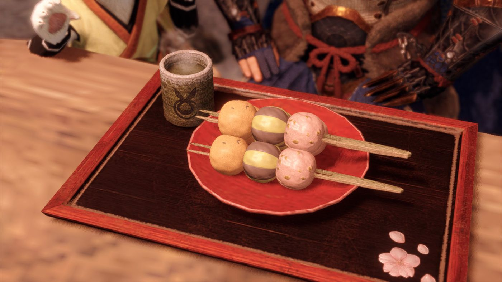
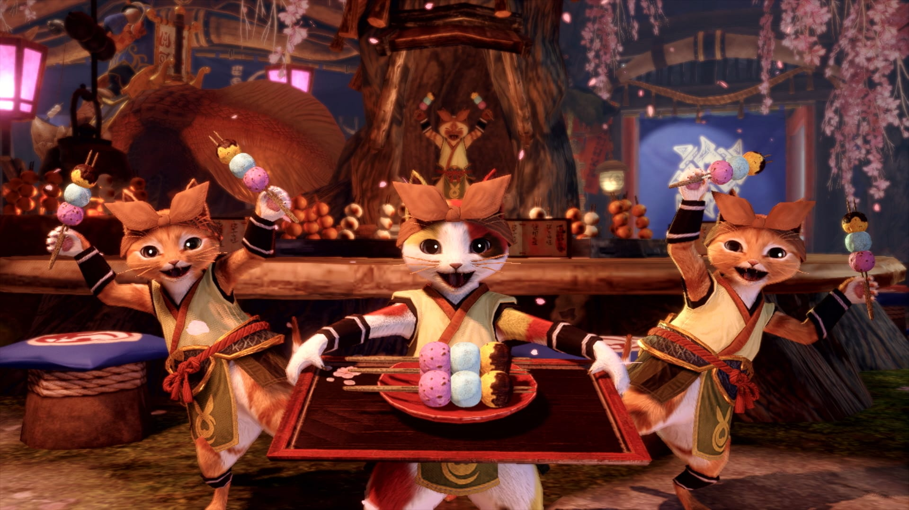

Fluffy Bunny Dango

Uu-ii-wa!
Pori nangu minga mitta niku de dano
Uzzute hinga de toete mune da~a~a
Domo iiru inwa de ta eta aki naaaa-(Hai!)
Sika dou da, nanao de ii
Ingredients
- Rice flour mixed with uruchi rice flour and glutinous rice flour
- Red bean paste
- Sesame paste
- Syrup made from shouyu (soy sauce), sugar, and starch
Steps
- Take the Monster Hunter's order - they always order the best food!
- Juggle the dango (this is essential)
- Skewer the dango, preferably while they are airborne.
- Catch the skewers on a serving platter.
- Garnish. Serve immediately with a steaming mug of tea!
